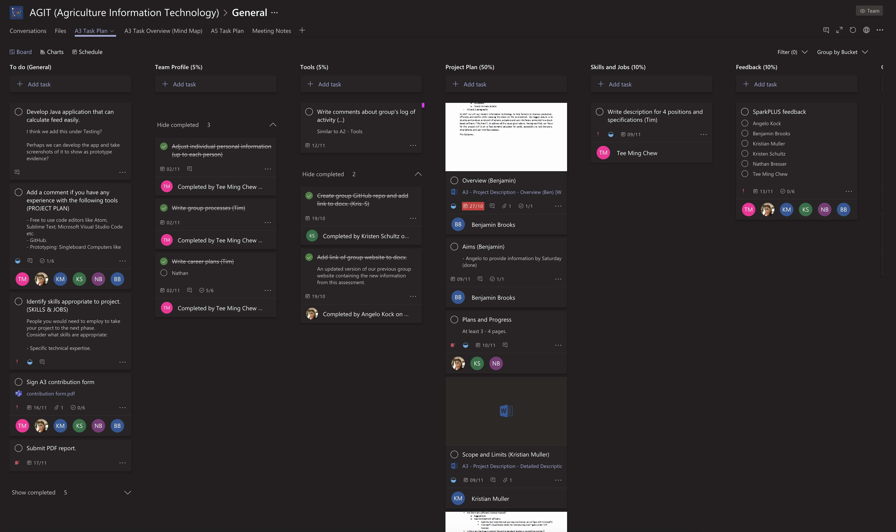
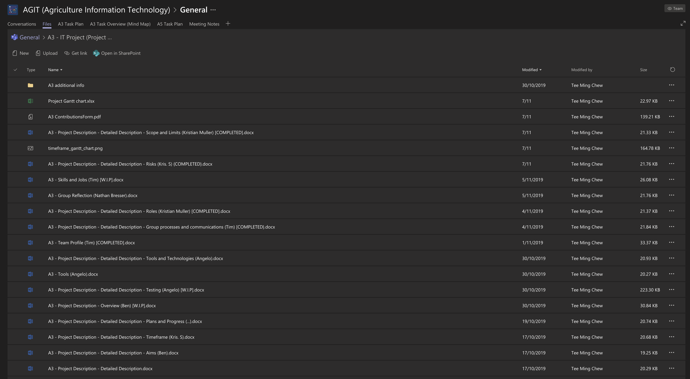

Website: https://krisschultz.github.io/AGIT---Agriculture-Information-Technology-A3/index.html
Repository: https://github.com/krisschultz/AGIT---Agriculture-Information-Technology-A3
The audit trail on the Git repository does not reflect our group’s work together. A large part of the work for this assignment is done using Microsoft Word and the workload is delegated in Microsoft Teams. The group divides the assignment workload among each group member while only a few people work on the group website. The task delegation is accomplished using the Task Plan feature as shown in the screenshot below. The group sets internal deadlines and checklists to keep track of the work done by each person. Additionally, group members can see who has last accessed each document and make comments on each other’s work to provide feedback as the group works together.
 The group was able to communicate effectively by using Microsoft Teams and WhatsApp. Group meetings were productive in discussing the details of the project and updating each other on our progress. Essential files were all stored in Microsoft Team's cloud storage which made it easy for all group members to edit and view them. The Task Plan feature of Microsoft Teams assisted the group in managing all the work that needed to be done and by whom. Group members were able to comment on tasks to provide information at their convenience. This was a huge improvement over the last assessment task where the group used a mind map to cover this. Group communication efforts still have room for improvement. Only a partial few members communicate regularly and effectively in the WhatsApp group chat. It is important that group members update the rest of the group on their status and work progress even though there is nothing new to show. One that was surprising was how quickly the group had grown to work with each other. Group meetings were conducted effectively and to the point because of how well group members understood each other’s strength and weaknesses. Stronger trust had developed between group members to complete their work on time. I have learned that groups take time for group members to adjust to one another and once the adjustment period is over, productivity will increase and group processes are carried out more efficiently. I have also learned the importance of including every group member to create a collaborative environment where each member feels the need to contribute.
The way in which our team came together and work productively and proactively during the last two assignments 3 & 5 has been fantastic. I feel as though the group as a whole has developed a great bond and understanding of where everyone's strengths and weaknesses are and as such we have worked far more efficiently as a result with the exception of a single member who I expected really good things out of this time around as although he showed up late at the end of assignment 2, good worked was produced along with a positive attitude towards the next assignments. This was unfortunately short lived however as there has been little to no contact.
We again used Microsoft teams to collaborate as this worked well for us in A2 and as a result the work has been easier to manage as we now know the tools that have been used so were able to use them for productively. The mind map was not really used with this assignment as we switched to a task plan which proved easier to read and follow with a few more added features such as commenting and ability to tick off as items were completed.
I have enjoyed working with this group of people as everyone has showed that when disaster strikes the rest will help pick up the pieces which I believe is a hard to find attribute of a random team environment.
Group meetings have once again been very productive and gone smoothly; this is due to the use of Microsoft Teams for established meetings and WhatsApp for troubleshooting messages, as we can access these apps throughout our daily lives. Delegating tasks to one another was also a very easy process as everyone was open to taking on any role, as in Assignment 2. It was also easy to see who was doing what due to the creation of a task planner on Microsoft Teams by other team members.
We chose to use a task planner instead of a mind map this time as it is easier to see who is doing which tasks, with the added ability to tick off and comment on tasks. I have surprisingly found the task planner a lot easier to navigate and use than the mind map and will be suggesting using it in group tasks I have in the future.
I believe we improved on our communication from the last assignment, however at times it was unclear who would be attending team meetings and if team members were going to have work done on time. In saying this however, I too am guilty of poor communication at times due to strenuous work commitments.
I have learnt that having some flexibility with team members is very important as some things are out of our personal control; especially for one team member who has been battling bush fires in NSW during the duration of this assignment. The groups GitHub activity log again does not reflect the groups work as we have been communicating and sharing all our work through Microsoft teams and WhatsApp.
We started working on assignment 3 & 5 immediately after submitting assignment 2. This allowed us to keep the momentum going and set up a game plan to succeed. We assigned tasks early on in the piece and everybody was clear on what needed to be done. We also collectively decided to check in twice a week and update the wider group as to how we were tracking.
We continued with the same methods of communication, Microsoft Teams and WhatsApp. We had a master document that everybody added to as well a document for each subsection. This worked very well, and we were tested as a Team when one of our members was caught up in the bushfires in NSW. Throughout this period, we stayed in contact and were able to find work arounds where needed. At this point we sought an extension of the assignment deadline as our team member could not be available to collaborate during this time.
I think we worked better in assignment 3 as we all were more familiar with the process and with each other. I have learned that a group of people from all around Australia can come together and complete project-based work through the use of modern technology. It has been a great experience working within the team and I enjoyed getting different perspectives on the subject we have been working on.
The work in our team was quite different to last time. Positive was that we started to work on the assignments straight after we finished the first one. We were familiar with our tools and we knew how to use them efficiently. The usage and communication via Microsoft Teams and WhatsApp was satisfying but also greatly improved compared to the last assignment. While, for the last assignment, we used one Word document to gather all the information (everyone accessed that document), we decided this time to create documents for each subsection of the assignment. This helped to access finalised parts of the assignments much quicker than before. Unfortunately, I had been heavily affected by bushfires for two weeks prior to the submission deadline, which took a lot of time away from me. The team handled the situation fantastically and took care of late submission arrangements as well as arranged things I would have under normal circumstances. That taught me that, even if one can’t immediately contribute, a good team handles the situation well. I was surprised to hear that one of our team members dropped out – he was very inactive in the beginning of the first assignment but then contributed with very valuable work towards the end. There was no communication this time around.
All team members of AGIT have agreed that the process of completing assignment three has been easier than assignment two; this is because all group members have become familiar with the Microsoft Teams platform from assignment two and being able to easily access its features having used it before – an example of this is getting the document signed for the group contribution or just sharing documents. However, we did change some processes from assignment two. For example, we used a task planner in Microsoft Teams instead of a mind map. All AGIT team members thought this was more functional than the mind map on MindMeister as we were able to better put tasks in order of what needs to be completed and tick off tasks once they were done. The task planner also made it easy to see where other members were up to, which kept everyone accountable. Our group GitHub repository does not reflect all our group work as everyone found Microsoft Teams a more functional way to collaborate as a group.
The most difficult thing about working as a group on this assignment was managing everyone’s personal life and finding a time that suited everyone to meet on Microsoft Teams. This was made more difficult during this period due to one team member not responding to messages, and another through no fault of his own being stuck in the recent bush fires and protecting his rural property. However, even though group members could not all always make it to scheduled meetings, all except one did their best to catch up on any information they had missed.
Occasionally group members were late with internal deadlines set by the group, however this was mostly due to events that could not be controlled, and the correct procedures were followed to make sure we got an extension ensuring no academic penalties were incurred.
This group worked well and there was a willingness across the group to volunteer for tasks and take on work. Despite our group facing some hardships during this time period everyone who contributed to this assignment stepped up and it will be ready and at a good quality before the revised deadline.